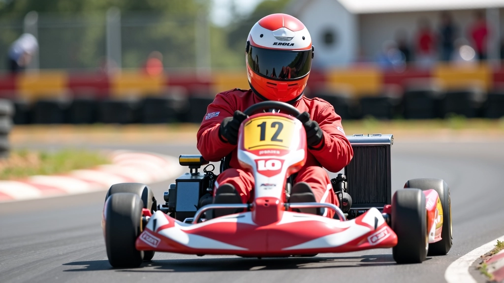
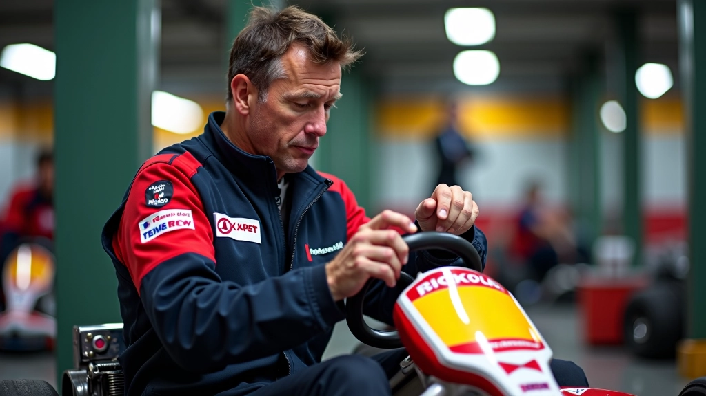

تقنيات الكبح قبل دخول المنحنى
الكثير يكبحون في الوقت الخاطئ. هنا ستتعلم متى وأين تبدأ الكبح لتحقيق أفضل نتيجة...
اقرأ المزيدالأبكس ليس مجرد نقطة عشوائية. شرح عملي لكيفية اختيار الخط الأمثل الذي يسمح لك بالخروج بأقصى سرعة من كل منحنى.


فريق التحرير والمراجعة
يُعدّ هذا المحتوى من قِبل فريق أبكس رايد التحريري، المتخصص في تقديم إرشادات عملية وسهلة الفهم حول تحسين أداء السباق.
الأبكس ببساطة هي أقرب نقطة من الخط الداخلي للمنحنى. لكن المشكلة أن معظم السائقين يظنون أن هذا يعني الذهاب بأسرع ما يمكن في تلك النقطة. الحقيقة مختلفة تماماً.
عندما تختار الأبكس بشكل صحيح، تستطيع تحقيق سرعة أعلى في نهاية المنحنى — وهذا هو ما يهم فعلاً. الخروج السريع من المنحنى يعني تسارع أسرع في المسافة المستقيمة التالية. ستشعر بالفرق من أول مرة.
الأبكس الصحيحة ليست في منتصف المنحنى دائماً. بل تتحرك حسب سرعة دخولك والخط الذي تختاره. كلما دخلت أسرع، تتحرك الأبكس نحو الخارج قليلاً.
هناك ثلاث طرق أساسية تساعدك في اختيار الأبكس. الأولى تُعتمد على الرؤية — تبحث عن نقطة محددة على المسار، مثل علامة أو خط معين. عندما تركز على نقطة محددة، يصبح من الأسهل تكرار نفس الخط في كل لفة.
الطريقة الثانية تعتمد على الإحساس. تشعر بضغط الجاذبية على جسدك والسيارة، وتتعلم متى تصل للنقطة المثالية. هذا يستغرق وقتاً لكنه يعطيك مرونة أكبر.
والطريقة الثالثة — وهي الأفضل — تجمع بين الاثنين. تستخدم علامة بصرية لكن تُضبط موقعها حسب الإحساس والسرعة الفعلية.
إذا أردت أبكس جيدة، يجب أن تبدأ من نقطة الدخول. عندما تدخل المنحنى، أنت تقرر بالفعل أين ستكون الأبكس. لا يمكنك تصحيح الخط بعدها بكثير.
ادخل المنحنى من الخارج قليلاً — ليس من الحافة مباشرة لكن بمسافة آمنة. هذا يعطيك مساحة للتحرك نحو الداخل بسلاسة. عندما تقترب من الأبكس، يجب أن تكون السيارة مستقيمة تماماً — لا تكون مائلة نحو الخارج.
معظم السائقين يخطئون هنا. يدخلون بسرعة كبيرة جداً فتُجبرهم السيارة على الخروج من المسار. ابدأ بسرعة أقل قليلاً من التي تعتقد أنك تحتاجها. يمكنك زيادتها تدريجياً كل لفة.
الكثير يكبحون في الوقت الخاطئ. هنا ستتعلم متى وأين تبدأ الكبح لتحقيق أفضل نتيجة...
اقرأ المزيد
الخروج من المنحنى بشكل صحيح هو ما يفرق بين الفائز والخاسر. تعلم كيفية تطبيق التس...
اقرأ المزيدالخط الأمثل يعتمد على إعدادات سيارتك. اكتشف كيف يؤثر توازن وضبط الإطارات على أدا...
اقرأ المزيدبعد الأبكس مباشرة، يبدأ الجزء المهم: الخروج. من الأبكس إلى نهاية المنحنى، يجب أن تزيد السرعة بسلاسة. لا تضغط على البنزين كله دفعة واحدة — سيجعل هذا السيارة تنزلق.
الخروج الصحيح يعني أن تضغط على البنزين تدريجياً، حسب استقامة عجلة القيادة. كلما استقامت العجلة أكثر، تستطيع إضافة سرعة أكثر. عندما تخرج من المنحنى تماماً، تكون قد وصلت لأقصى سرعة بالفعل.
لاحظ أن السائقين الأسرع يختارون أبكس أبعد قليلاً عن الداخل المثالي. لماذا؟ لأن هذا يسمح لهم بالخروج بخط أوسع وسرعة أعلى. إنهم يضحون بجزء صغير من السرعة في الأبكس لكسب أكثر في الخروج.

ابحث عن شيء محدد على المسار — علامة، خط أبيض، أو حتى شجرة بعيدة. استخدم هذه العلامة لتحديد أبكس ثابتة. لا تغيرها كل لفة.
لا تقلق بشأن السرعة في البداية. ركز فقط على دخول ناعم واتساق الخط. عندما تتقن الدخول، ستأتي السرعة طبيعياً.
في التدريب، جرب أبكس مختلفة قليلاً — نقطة داخلية أكثر أو أبعد. شعر بالفرق في السرعة والثبات. هذا يساعدك على فهم التأثير الفعلي.
هذا يعني أنك حقاً تتقن الخط. الاتساق هو علامة السائق الماهر. عندما تستطيع تكرار نفس الخط بدقة، أنت جاهز للسرعة.
الأبكس الصحيحة ليست سرّاً معقداً. إنها نتيجة لاختيار جيد للدخول وخط متسق. ابدأ ببطء، اختر علامة بصرية، وركز على التكرار. مع الوقت ستصبح الحركة طبيعية تماماً.
تذكر: أفضل سائق ليس من يدخل الأبكس بأسرع سرعة، بل من يخرج من المنحنى بأعلى سرعة. هذا ما يحسب فعلاً على المسار.
هذا المحتوى بغرض تعليمي وإعلامي فقط. تقنيات السباق والخطوط المثلى قد تختلف حسب نوع السيارة والمسار والظروف الجوية. نوصيك دائماً باتباع تعليمات المدرب المحترف وقواعد السلامة في الحلبة. أبكس رايد ليست مسؤولة عن أي حوادث أو إصابات ناتجة عن محاولة تطبيق هذه التقنيات بدون إشراف متخصص.